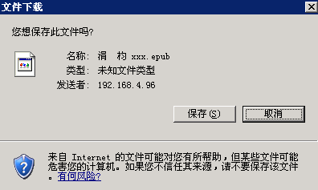

服务器下载文件Http头的设置
网站提供下载服务时经常需要实现一个强制下载功能（即强制弹出下载对话框），并且文件名保持和用户之前上传时相同。
效果如下图：

Content-Disposition
使用 HTTP Header 的 Content-Disposition: attachment 可以实现下载时强制弹出下载对话框。
由于HTTP协议规定，通信内容使用US ASCII编码，就是只能使用英文字符集。若要使用其他字符集，必须根据RFC3986使用百分号将字符串编码。
Content-Disposition: attachment; filename=filename.ext
Content-Disposition: attachment; filename*=charset'lang'encoded-filename.ext
如果不进行编码会出现,用户保存文件文件名会是乱码。如下图：

不过关于Content-Disposition的RFC6266规范是2011年6月才纳入HTTP标准。
浏览器方面我测试了主流浏览器，Firefox 、 Chrome 、 Opera 、 Safari ，都支持新标准规定的 filename，不出意料，万恶的IE并不支持这个规范。不过我还是很吃惊，IE10竟然也不支持filename。
按照规范输出Content-Disposition的PHP代码如下：
if ( strpos ( $_SERVER [ 'HTTP_USER_AGENT' ], "MSIE" ) > 0 )
{
header ( 'Content-Disposition: attachment; filename="' . rawurlencode ( $originfile ) . '"' );
}
else
{
header( 'Content-Disposition: attachment; filename*=UTF-8\'\'' . rawurlencode ( $originfile ) );
}
注意编码时使用rawurlencode而不是urlencode,二者的区别在于前者把空格编码为%20，而后者是+。在stackoverflow上关于这两个函数有更详细的讨论，PHP - urlencode vs rawurlencode?。
Content-Type
浏览器对已知类型的文件（如jpg、pdf、txt等）直接在浏览器内打开，我们通过设置http头中的 Content-Type 来改变浏览器认知的文件类型。 这里把Content-Type 设置为octet-stream,也就是二进制文件流。这样浏览器就会直接打开文件，而不是在浏览器内打开。
Content-Type: application/octet-stream
完整PHP代码
$filename = '中文文件名.txt';
header('Content-Type: application/octet-stream');
if ( strpos ( $_SERVER [ 'HTTP_USER_AGENT' ], "MSIE" ) > 0 )
{
header ( 'Content-Disposition: attachment; filename="' . rawurlencode ( $originfile ) . '"' );
}
else
{
header( 'Content-Disposition: attachment; filename*=UTF-8\'\'' . rawurlencode ( $originfile ) );
}
header('Expires: 0');
header('Cache-Control: must-revalidate, post-check=0, pre-check=0');
header("Content-Transfer-Encoding: binary");
header('Pragma: public');
header("Content-Length: ".filesize($filename));
参考资料
Test Cases for HTTP Content-Disposition header field (RFC 6266) and the Encodings defined in RFCs 2047, 2231 and 5987